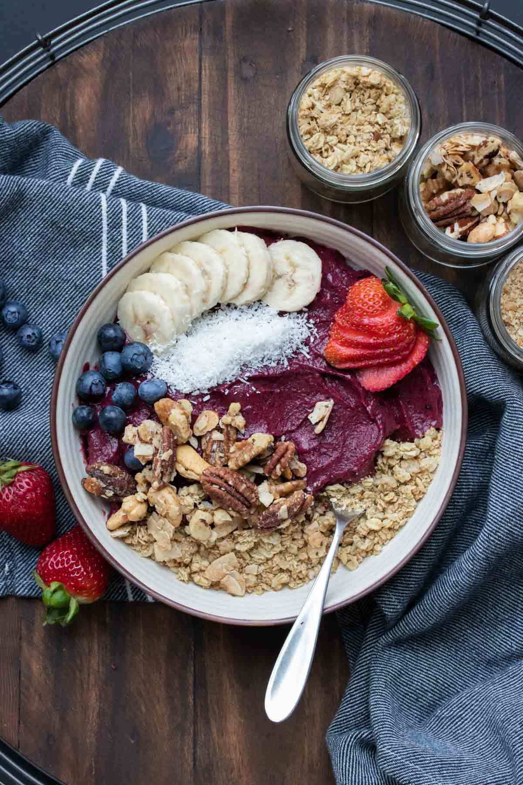

Vegan Lasagna

Description
If you want to know how to make the best thick vegan smoothie bowl you’ve come to the right place. You’ll be blown away by how easy it is!
Ingredients
- 2 cups frozen fruit
- 4-6 tablespoons dairy-free milk , use canned coconut milk for the most creamy version
- 1-2 tablespoons almond or peanut butter , optional
Toppings:
- Fresh fruit
- Dried fruit
- Nuts
- Hemp seeds
- Shredded coconut
- Granola
Steps:
- Put frozen fruit into a blender. Pulse to chop into small pieces, you almost want it shredded. Make sure you pulse and not blend so that it doesn’t get stuck.
- Add the milk and nut butter if using. Blend or pulse on low while stopping to move the mixture around. If you have a vitamix, the tamper will work well for this. Do not blend on high or the heat will melt the mixture.
- Once it is the consistency of a thick frozen yogurt, pour into a bowl and serve topped with the toppings you want!